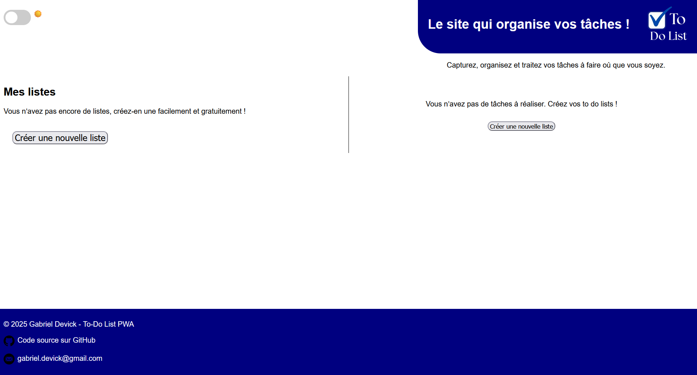
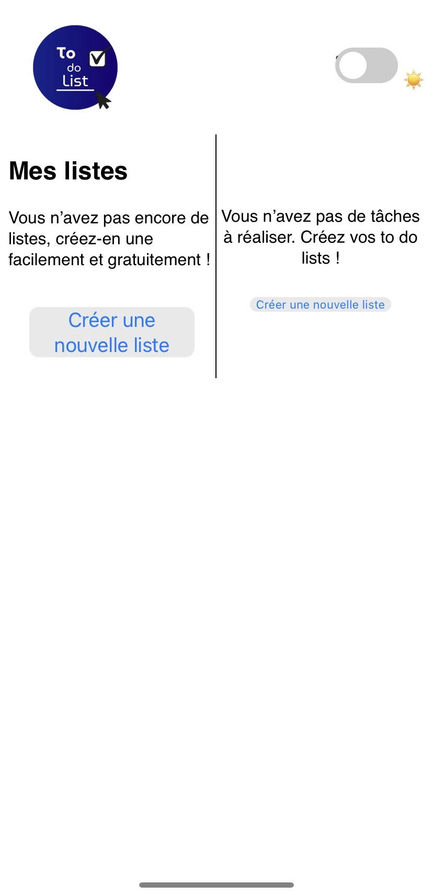

Bonjour, je suis
A propos de moi
Actuellement en deuxième année de licence informatique, je me destine à une carrière dans la cybersécurité ou le développement full stack, deux domaines qui allient technique et innovation.
Ma passion pour l’informatique est née en classe de seconde. Après le bac, j’ai naturellement choisi une licence en informatique pour approfondir mes connaissances et acquérir de nouvelles compétences. Cette première année m’a permis de :
- Maîtriser des langages comme Python (POO, calcul scientifique), HTML/CSS, et JavaScript.
- Découvrir le C, un langage clé pour comprendre les mécanismes bas niveau.
- Explorer l’algèbre, une base essentielle pour aborder des concepts avancés en informatique.
J’ai récemment développé une To-Do List sous forme de Progressive Web App (PWA), utilisant HTML, CSS et JavaScript. Ce projet m’a permis de mettre en pratique mes compétences en développement frontend, en gestion des données côté client, et d’explorer les fonctionnalités avancées des PWA, comme le mode hors ligne et l’installation sur mobile.
En dehors de l’informatique, je suis passionné par les échecs, un jeu qui stimule ma logique et ma stratégie. Sportif dans l’âme, je pratique également la musculation et le football, qui m’apportent discipline et esprit d’équipe.
Toujours en quête d’apprentissage, je cherche à appliquer mes compétences à des projets concrets tout en explorant de nouvelles technologies.
Mes projets
PWA To-Do List


Application web permettant à l'utilisateur de gérer une liste de tâches personnelles.
Voir le siteMon parcours
Formation
Université de Caen Normandie
Licence informatique, 2024-2027
Première année mention bien
Lycée Sivard de Beaulieu
Baccalauréat général, septembre 2021-juillet 2024
Mention très bien, spécialités Numérique et Sciences Informatiques et Anglais Monde Contemporain
Expériences
Réceptionniste
Camping Le Cormoran, Ravenoville, Normandie, France
CDD juin 2025-août 2025
Employé de magasin
Les Spécialités du Bocage Normand, Sainte-Mère-Eglise, Normandie, France
CDD mai 2025- juin 2025
Equipier polyvalent
Mcdonald's, Isigny sur mer, Normandie, France
CDI juin 2023- mai 2025